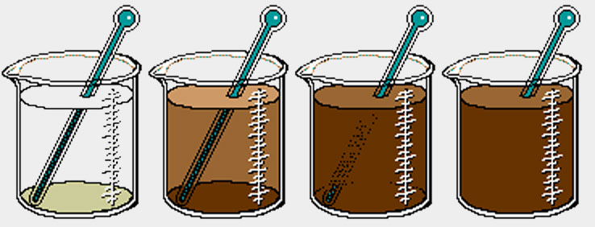

Turbidity is the cloudiness of a liquid due to the different types of particles in it such as dirt, pollutants, and tiny organisms. Water with high turbidity usually indicates poor water quality. Similar to how smoke pollutes the air, water can be polluted by cars, boats, and trash. Humans are the number one polluters of water and air...but you can make a difference!
Dissolved Oxygen
How does oxygen get into the water?
Dissolved Oxygen is the amount of oxygen present in the water. There are many ways for oxygen to get into the water such as algae releasing oxygen during photosynthesis, oxygen from the atmosphere, and rivers that trap air in the water when it flows.
Words and phrases to know:
- Turbidity
- Biodiveristy
- Brackish Water
- Lagoon
- Wetland
- ph Scale